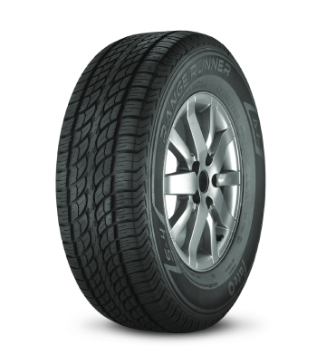

FATE Range Runner HT

DESCRIPCIÓN
Diseñado para experimentar un andar silencioso y la máxima seguridad en rutas. Su versatilidad lo caracteriza para su aplicación en SUV, vans, camionetas y minibuses, con excelente flexibilidad y confort de uso. Neumático especialmente concebido para uso en asfalto.
PRESTACIONES
Excelente drenaje de agua que evita el aquaplaning.
Todas las posiciones y todas las condiciones climáticas.
Rodado multipropósito adecuado para variadas condiciones de uso.
Diseño de rodado optimizado para lograr una marcha silenciosa y segura.
Muy buen rendimiento kilométrico y desgaste parejo.
MEDIDAS
235/70 R16
365/75 R16
255/70 R15
RECOMENDACIONES
Revise periódicamente la presión de inflado de sus neumáticos y respete los valores indicados por el fabricante del vehículo.
Si transporta carga consulte las tablas de presión en relación a la carga.
Importante: Las medidas indicadas con el prefijo "P" son para uso en automóviles y por su construcción no son aptas para su empleo en camionetas.